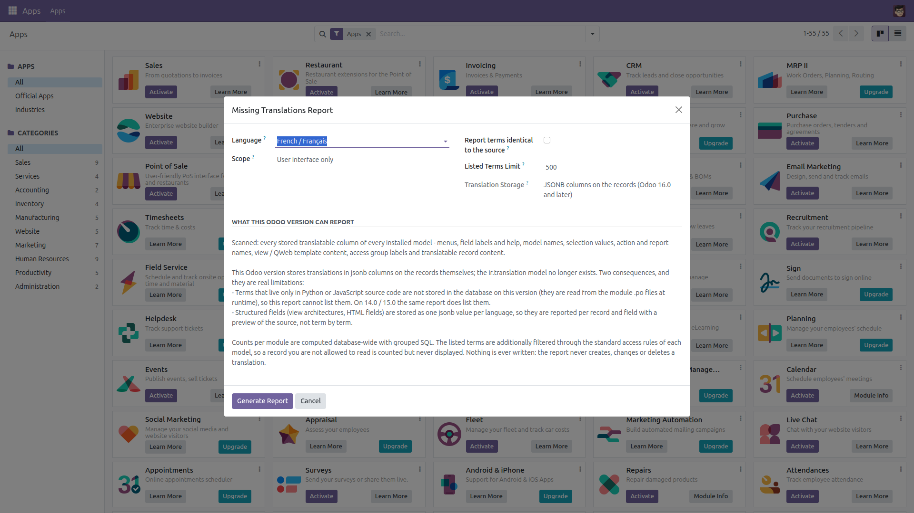
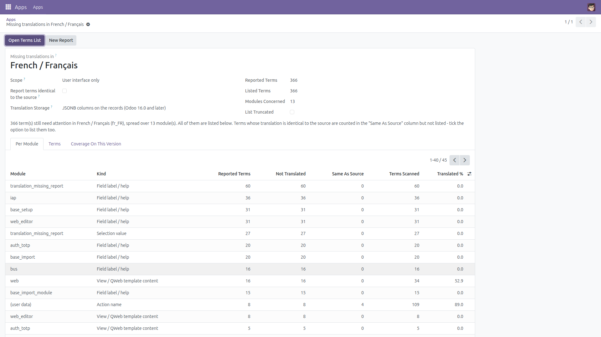
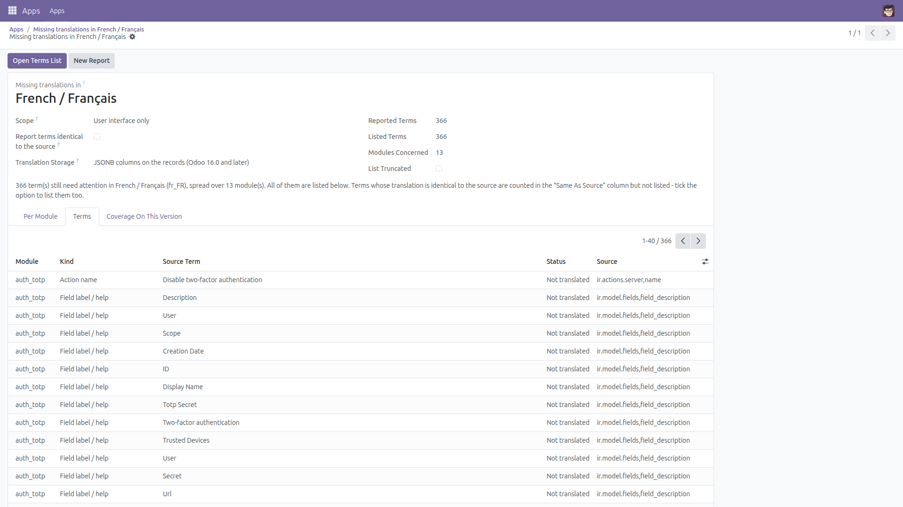
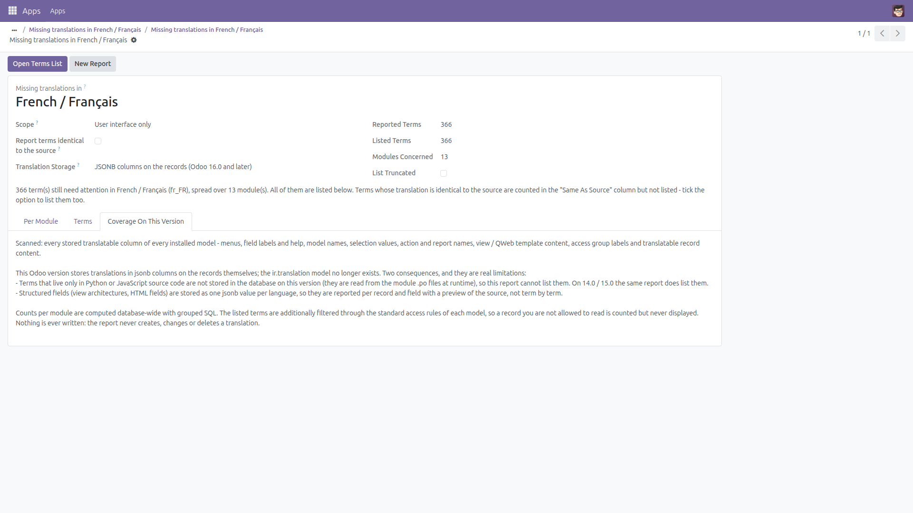
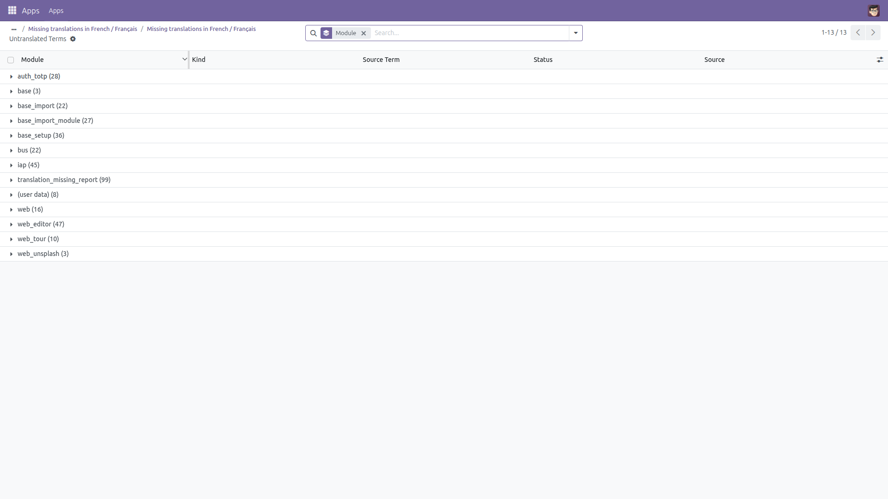

Missing Translations Report
Where is the translation work still to be done?
Running Odoo in a second language always leaves gaps — a menu here, a field label there, a report heading nobody exported. Finding them normally means clicking around the interface in that language until something looks wrong. This module adds an administrator report that answers the question directly: pick an installed language and it lists the terms that still have no translation, grouped by module and by kind, with a count per module so you know where the work actually is.
Free and open source (LGPL-3), Odoo 14.0 through 19.0.
- Untranslated terms, listed — menus, field labels and help, model names, selection values, action and report names, view / QWeb template content, access group labels and translatable record content.
- Identical-to-source terms, optionally — a “translation” that is character for character the same as the source is usually a term nobody has looked at yet. Off by default, one tick to include it, always counted separately.
- Counts per module and per kind — how many terms are reported, how many were scanned and the share already translated, so you can start with the module that matters.
- Scope switch — audit the user interface only, business record content only, or everything.
- It handles both Odoo translation storages — the
ir.translation table on 14.0 / 15.0 and the JSONB columns introduced in 16.0 — and it tells you on screen which one it used.
- Strictly read-only — the report never creates, changes or deletes a translation, and never touches your records.
- Built for real databases — counts come from grouped SQL queries, never a record-by-record loop; the list of terms is capped by a limit you set and the report says so when it truncated.
- Administrator only — restricted to the Administration / Settings group, and the listed terms are filtered through the standard access rules of each model.
What differs between Odoo versions — honestly
This is not the same job on every series, and the module does not pretend it is:
- Odoo 14.0 and 15.0 keep every term as a row of
ir.translation. There, the report also lists untranslated Python / JavaScript source terms, with their module.
- Odoo 16.0 and later removed that model and moved translations into JSONB columns on the records themselves. Source-code terms are no longer stored in the database on those versions — they are read from the module
.po files at runtime — so they cannot be listed. The report says this on screen instead of quietly reporting less.
- Structured fields (view architectures, HTML fields) are reported per record and field with a preview of the source, not term by term. On 14.0 / 15.0 such a record counts as translated as soon as one of its terms is translated.
- Counts are computed database-wide; the listed terms are additionally filtered by access rules, so a record you may not read is counted but never displayed. The report tells you how many.
- Records that have no external ID (records your users created) have no module and are grouped under
(user data).
Screenshots

Pick an installed language and a scope. The dialog states which translation storage this Odoo version uses and exactly what can and cannot be reported on it.

Counts per module and per kind: reported terms, terms not translated, terms identical to the source, terms scanned and the share already translated.

The terms themselves: module, kind, the source text, why it is reported and where it comes from.

The report spells out what it can and cannot see on the running version — including what only 14.0 / 15.0 can offer.

The same terms in a full list, grouped by module and filterable by kind or status — ready to export to a spreadsheet for your translator.
Installation
- Copy the module into your addons path, or install it from the Apps list.
- Open Apps, remove the “Apps” filter, search for Missing Translations Report and click Install.
- Only the standard
base module is required.
Configuration
- No configuration is needed — the report works as soon as the module is installed.
- At least one language other than the source language must be installed (Settings → Translations → Languages). A language that is not installed is refused with a clear message.
- Access is restricted to the Administration / Settings group; no other user can open or read the report.
- Optional: raise the Listed Terms Limit (up to 20 000) if you want a longer list in one go. Counts are never capped.
Usage
- Go to Settings → Missing Translations.
- Choose the language to audit and a scope: user interface only, business record content only, or everything.
- Tick Report terms identical to the source if you also want terms that were “translated” with the source text.
- Click Generate Report.
- Read Per Module to see where the work is, then Terms for the individual terms.
- Click Open Terms List for the full list grouped by module — filter by kind, then select all and Export to hand a spreadsheet to your translator.
- Translate the terms with Odoo’s own tools (Settings → Translations, or the per-field translate button), then run the report again to see the counts drop.
Version notes
Same report, same options and same output structure on 14.0, 15.0, 16.0, 17.0, 18.0 and 19.0. The one deliberate difference is coverage: Python / JavaScript source terms are listed on 14.0 and 15.0 only, because 16.0 and later do not store them in the database. The report names the storage it used and repeats this limitation on the Coverage tab, so the number you read is never more than the number it can actually stand behind. The report is a wizard: its results are temporary records that Odoo cleans up automatically, and nothing is added to your data.
License: LGPL-3 · Source on GitHub · Issues and contributions welcome.